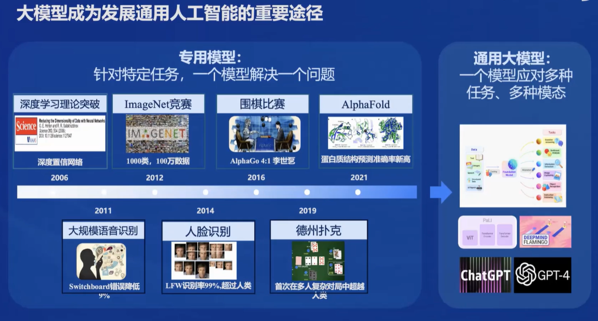
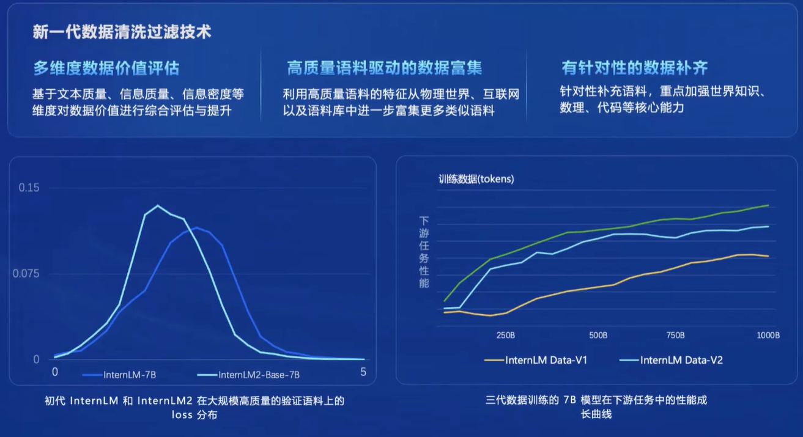
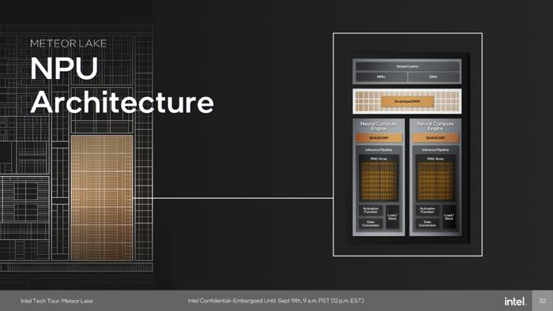
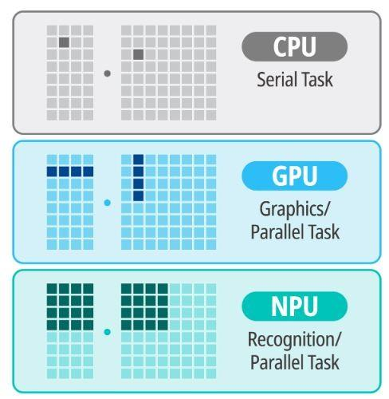

书生·浦语大模型笔记1
大模型概述
大模型通常指的是具有庞大参数和复杂结构的机器学习模型。这些模型通过在大规模数据集上进行训练，能够学习到丰富的特征表示和复杂的映射关系。 大模型在众多领域都有广泛的应用，包括但不限于自然语言处理、计算机视觉、语音识别等。在自然语言处理领域，大模型可以用于文本分类、情感分析、机器翻译等任务；在计算机视觉领域，大模型可以实现高质量的图像识别和生成；在语音识别领域，大模型可以准确地将语音信号转换为文本。而在深度学习中，大模型往往表现为深度神经网络，如卷积神经网络（CNN）、循环神经网络（RNN）和变换器（Transformer）等。
大模型称为发展通用人工智能的重要途经

面向不同的需求，会有不同的模型。但是大模型可以使得一个模型解决多种任务，所以说通用大模型称为一个热点，是通往人工智能的一个关键途径。
回归语言建模的本质
大模型本质上是在做语言建模，通过给定的文本，预测接下来的token。

大模型的挑战与未来展望
尽管大模型在机器学习领域取得了显著成果，但仍面临一些挑战。首先，大模型的训练需要大量的计算资源和时间，这使得其在实际应用中受到一定限制。其次，大模型可能存在过拟合和泛化能力较差的问题，需要采用合适的正则化技术和优化算法进行改进。
InternLM2技术报告要点
InterEvo
InternEvo是一个开源的轻量级训练框架，旨在支持无需大量依赖关系的模型预训练。凭借单一代码库，InternEvo支持在具有上千GPU的大规模集群上进行预训练，并在单个GPU上进行微调，同时可实现显著的性能优化。当在1024个GPU上进行训练时，InternEvo可实现近90%的加速效率。
其中的文档提到了NPU，那么什么是NPU？
NPU
神经网络处理单元（NPU）是一种专门设计用于加速神经网络计算的处理器。与传统的中央处理单元（CPU）和图形处理单元（GPU）不同，NPU从硬件层面上针对AI计算进行了优化，以提高性能和能效。

NPU的工作原理是利用其专门设计的硬件结构来执行神经网络算法中的各种数学运算，如矩阵乘法、卷积等。这些运算是神经网络训练和推理过程中的核心操作。通过在硬件层面上进行优化，NPU能够以更低的能耗和更高的效率执行这些操作。
NPU与CPU、GPU的不同
CPU是通用处理器，设计用于执行广泛的计算任务。它具有强大的灵活性和可编程性，但可能在特定任务（如AI计算）上效率不高。
GPU最初设计用于处理图形和视频渲染，它擅长处理并行计算任务，因此在AI领域也得到了广泛应用。然而，GPU并非专门为AI计算设计，它在处理某些类型的AI任务时可能不如NPU高效。
简单来说，如下图，很容易说明三者不同：CPU是线性、串行任务（指令）执行，效率较低，通用性较高；GPU是并行处理和专用图形并行处理，效率更高；而NPU则是“并行认知处理”，在AI机器学习方面，效率更高。
